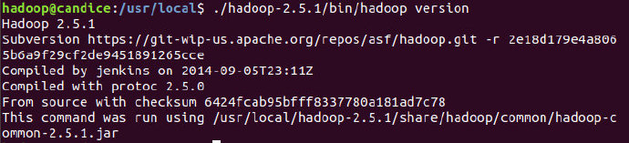
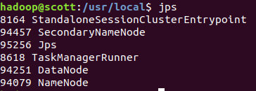
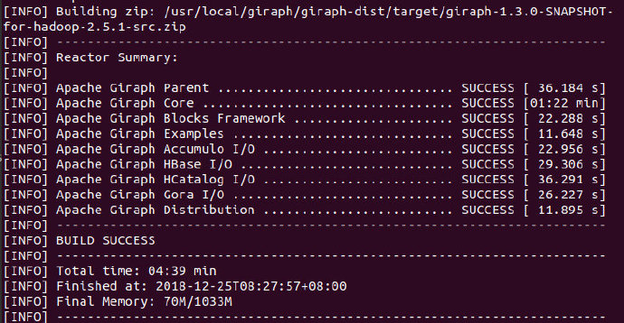
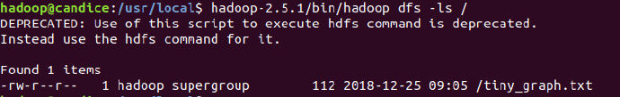
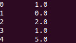

环境配置
Hadoop配置
这里使用Hadoop2.5.1进行配置，可以参考这里。
查看版本号

运行Hadoop
./hadoop-2.5.1/sbin/start-dfs.sh
查看是否成功

Giraph配置
下载Giraph
cd /usr/local
sudo git clone https://github.com/apache/giraph.git
sudo chown -R hadoop:hadoop giraph
编译
cd giraph
mvn -Phadoop_2 -Dhadoop.version=2.5.1 -DskipTests clean package
编译成功：

运行
执行最短路径程序
输入
创建/tmp/tiny_graph.txt，输入:
[0,0,[[1,1],[3,3]]]
[1,0,[[0,1],[2,2],[3,1]]]
[2,0,[[1,2],[4,4]]]
[3,0,[[0,3],[1,1],[4,4]]]
[4,0,[[3,4],[2,4]]]
每一条线由[source_id,source_value,[[dest_id, edge_value],...]]构成。
并拷贝到HDFS中：
cd /usr/local
hadoop-2.5.1/bin/hadoop dfs -copyFromLocal /tmp/tiny_graph.txt /tiny_graph.txt

提交任务
/usr/local/hadoop-2.5.1/bin/hadoop jar /usr/local/giraph/giraph-examples/target/giraph-examples-1.3.0-SNAPSHOT-for-hadoop-2.5.1-jar-with-dependencies.jar org.apache.giraph.GiraphRunner org.apache.giraph.examples.SimpleShortestPathsComputation -vif org.apache.giraph.io.formats.JsonLongDoubleFloatDoubleVertexInputFormat -vip /tiny_graph.txt -vof org.apache.giraph.io.formats.IdWithValueTextOutputFormat -op /shortestpaths -w 1 -ca giraph.SplitMasterWorker=false
查看结果
每个点离点1的最短路径：

查看代码例子
package org.apache.giraph.examples;
import org.apache.giraph.graph.BasicComputation;
import org.apache.giraph.conf.LongConfOption;
import org.apache.giraph.edge.Edge;
import org.apache.giraph.graph.Vertex;
import org.apache.hadoop.io.DoubleWritable;
import org.apache.hadoop.io.FloatWritable;
import org.apache.hadoop.io.LongWritable;
import org.apache.log4j.Logger;
import java.io.IOException;
/**
* Demonstrates the basic Pregel shortest paths implementation.
*/
@Algorithm(
name = "Shortest paths",
description = "Finds all shortest paths from a selected vertex"
)
public class SimpleShortestPathsComputation extends BasicComputation<
LongWritable, DoubleWritable, FloatWritable, DoubleWritable> {
/** The shortest paths id */
public static final LongConfOption SOURCE_ID =
new LongConfOption("SimpleShortestPathsVertex.sourceId", 1,
"The shortest paths id");
/** Class logger */
private static final Logger LOG =
Logger.getLogger(SimpleShortestPathsComputation.class);
/**
* Is this vertex the source id?
*
* @param vertex Vertex
* @return True if the source id
*/
private boolean isSource(Vertex<LongWritable, ?, ?> vertex) {
return vertex.getId().get() == SOURCE_ID.get(getConf());
}
@Override
public void compute(
Vertex<LongWritable, DoubleWritable, FloatWritable> vertex,
Iterable<DoubleWritable> messages) throws IOException {
if (getSuperstep() == 0) {
vertex.setValue(new DoubleWritable(Double.MAX_VALUE));
}
double minDist = isSource(vertex) ? 0d : Double.MAX_VALUE;
for (DoubleWritable message : messages) {
minDist = Math.min(minDist, message.get());
}
if (LOG.isDebugEnabled()) {
LOG.debug("Vertex " + vertex.getId() + " got minDist = " + minDist +
" vertex value = " + vertex.getValue());
}
if (minDist < vertex.getValue().get()) {
vertex.setValue(new DoubleWritable(minDist));
for (Edge<LongWritable, FloatWritable> edge : vertex.getEdges()) {
double distance = minDist + edge.getValue().get();
if (LOG.isDebugEnabled()) {
LOG.debug("Vertex " + vertex.getId() + " sent to " +
edge.getTargetVertexId() + " = " + distance);
}
sendMessage(edge.getTargetVertexId(), new DoubleWritable(distance));
}
}
vertex.voteToHalt();
}
}
主要就两个函数：
- compute
- 执行实际的计算
- sendMessage
- 发送消息